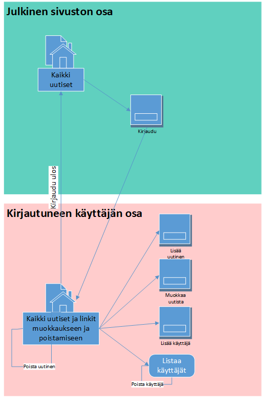

PHP-harjoitus 15, MVC ja PDO
Alla on näyttökartta järjestelmän toiminnasta:

Tarkoituksena on tehdä sovellus jolla voi
- Lisätä uusia uutisia
- Hakea näkyviin listauksen uutisista (linkit muokkaa ja poista)
- Muokata uutisia lomakkeella
- Poistaa uutisen linkin avulla
Vaihe 1
Laadi sopiva kansiorakenne työllesi.
Toteuta tietokanta. Tee ensin taulu uutinen, jossa ovat kentät uutinenID integer(10), otsikko varchar (50), sisalto text, kirjoituspvm date, poistamispvm date, kirjoittaja varchar (50).
Tee toinen taulu kayttajat, johon tulevat ainakin seuraavat kentät: kayttajaID integer(10), kayttajatunnus varchar (50) ja salasana varchar(255).
Toteuta yhteystiedosto sekä kaksi mallitiedostoa (models, sisältävät SQL-lauseet):
Uutinen.php
Luo siihen seuraavat funktiot ja testaa niiden toiminta (voit myös vaihtaa nimet englanniksi) :
- haeKaikkiUutiset()
- haeUutinen($id)
- lisaaUutinen($data)
- muokkaaUutista($data)
- poistaUutinen($id)
Kayttaja.php
- haeKaikkiKayttajat()
- lisaaKayttaja($data)
- poistaKayttaja($id)
- tarkistaLogin($nickname,$password) - toteutusesimerkki kirjautumisdemossa
- haeId($nickname)
Vaihe 2
Laadi tarvittavat näkymätiedostot osineen työllesi
- index.view.php
- admin.view.php
- lisaauutinenform.view.php
- muokkaauutistaform.view.php (vanhojen tietojen näyttämisen voi siirtää myöhemmäksi)
- kirjauduform.view.php
- lisaakayttajaform.view.php
- HUOM. Käyttäjän muokkaus ei ole tarpeen
Vaihe 3
Laadi reittitedosto index.php sekä tarvittavat kontrolleri- ja helper-tiedostot.
Vaihe 4
Lisää mieleisesi ulkoasu
Vaihe 5
Relaatio uutinen - kayttajat
Jotta käyttäjä näkisi vain omat uutisensa (ei voisi poistaa tai muokata muiden uutisia) niin tarvitaan relaatio
- lisää kenttä kayttajaID taululle uutinen
- lisää INDEX ja Relaationäkymässä relaatio
Miten tämä muuttaa toimintaa?
- kun kirjaudutaan niin kutsutaan esim. haeKayttajanUutiset($id) -funktiota
- funktiossa haet kaikki käyttäjän uutiset
(select * from uutinen where kayttajaID=?)
- kun lisätään uutinen niin pitää lisätä id mukaan
Mistä id löytyy?
saat kirjautuneen käyttäjän id:n sessiosta: $_SESSION["id"]